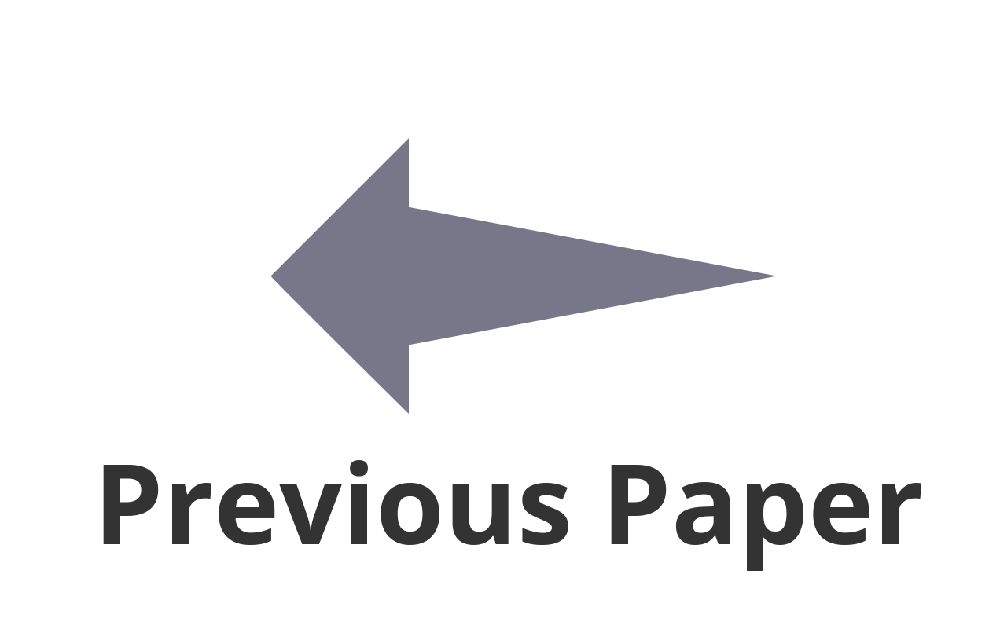

|
Christoph Böhm (Universität Klagenfurt), Martin Scheiber (Universität Klagenfurt), Stephan Weiss (Universität Klagenfurt) |
|
| Paper #087 |
| Interactive Poster Session II | Interactive Poster Session VII |
Accurate system modeling and identification gain importance as tasks executed by autonomously acting unmanned aerial vehicles (UAVs) get more complex and demanding. This paper presents a Bayesian filter approach to online and continuously identify the system parameters, sensor suite calibration states, and vehicle navigation states in a holistic framework. Previous work only tackles subsets of the overall state vector during dedicated phases (e.g., motionless, online during flight, post-processing). These works often introduce the artificial so-called body frame forcing assumptions on system states, such as the inertia matrix’s principal axes orientation. Our approach estimates the entire state vector in the (usually not precisely known) center of mass, eliminating several assumptions caused by the artificially introduced body frame in other work. Since our approach also estimates geometric states such as the rotor and sensor placements, no hand-made measures to the unknown center of mass are required – the system is fully self-calibrating. A detailed discussion on the system’s observability reveals additionally required (different) measurements for a theoretical and a real N-arm multicopter. We show that easy and precise hand-measurable quantities in real applications can provide the required information. Statistically relevant simulations in Gazebo/RotorS providing ground truth for all states yet having realistic physics validate all our findings.
|  |